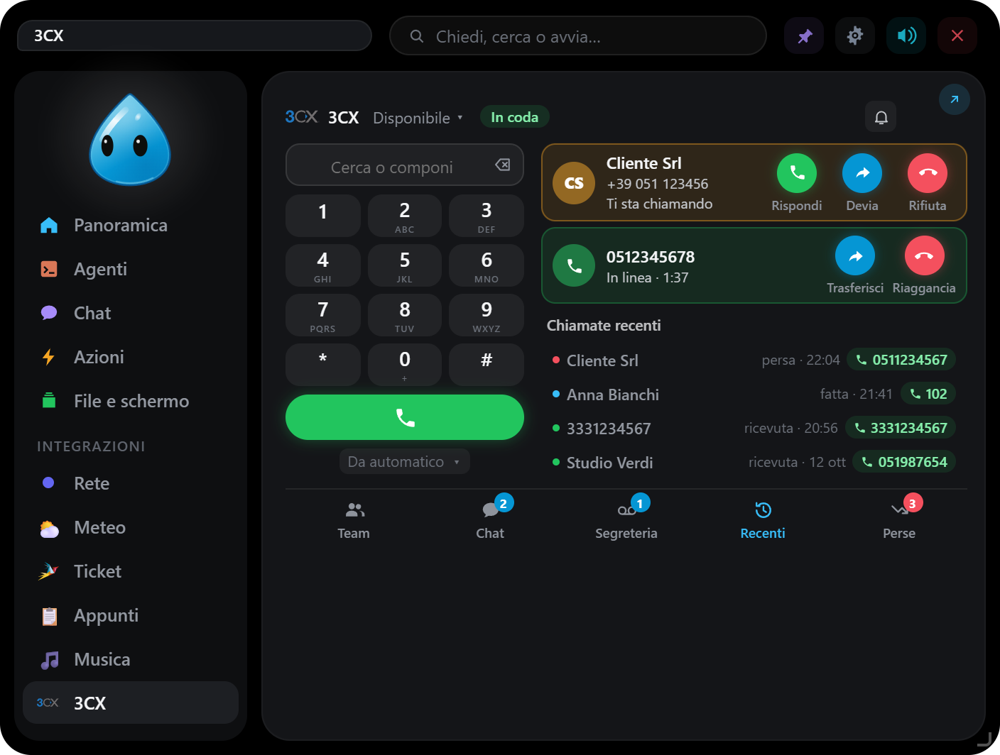

3CX
Il centralino 3CX nell'isola: telefono nel PC, chiamate, rubrica, team, chat e segreteria.

#Collegarsi
Impostazioni → Integrazioni → 3CX (centralino 3CX V20). Due modi:
- Interno e password (consigliato): EasyIsland entra come l'app 3CX, con l'indirizzo del centralino (es.
https://azienda.my3cx.it:5001), il tuo interno o la tua e-mail e la password del web client. Nessuna licenza in più. È il modo in cui lavora il web client di 3CX, non un'interfaccia documentata: un aggiornamento del centralino potrebbe richiedere un aggiornamento di EasyIsland. La verifica in due passaggi non è ancora supportata. - Client API: nell'Admin Console, Integrazioni → API → Aggiungi, spunta 3CX Call Control API Access (e Configuration API Access per la rubrica) e aggiungi il tuo interno tra quelli monitorati. Serve una licenza 8SC o superiore. Stato, cronologia, team e chat non sono disponibili in questo modo.
#La scheda, come un telefono
A sinistra display, tastierino, tasto verde e dispositivo; a destra le chiamate in corso, le recenti e le perse.
- Chiamare: scrivi un numero o cerca un nome, un'azienda o un collega nella rubrica e clicca il numero; Invio chiama il primo risultato.
- Dispositivo: Da … sceglie da dove parte la chiamata (app 3CX per Windows, telefono da scrivania, smartphone, Questo PC) o automatico.
- Stato (Disponibile, Assente, Non disturbare…) dal menu accanto a «3CX».
- Chiamate perse e Recenti.
#«Questo PC»: EasyIsland è il telefono
Scegliendo Questo PC come dispositivo, EasyIsland si registra come telefono WebRTC del tuo interno:
- chiami e rispondi dal PC, con microfono e cuffie;
- Muto, toni del tastierino, trasferimento e deviazione;
- suoneria sintetizzata o un tuo MP3, sul dispositivo audio che scegli.
#Chiamate in arrivo
L'isola si apre sulla scheda 3CX con un suono e resta aperta finché squilla, con Rispondi e Rifiuta. Con le risposte rapide accese e l'isola chiusa, Rispondi e Rifiuta compaiono accanto al personaggio, e durante la chiamata la durata con Muto e Riaggancia. Con la campanella della scheda spenta resta solo il pallino. Con «davanti al cliente» non compare il nome di chi chiama.
#Team, chat, segreteria, code
Con «Interno e password»:
- Team in tempo reale: lo stato dei colleghi e rispondi al suo posto;
- Chat con colleghi e gruppi;
- Segreteria con la trascrizione;
- Code di chiamata.
#Con le automazioni
Una chiamata in arrivo può avviare un'automazione ({chiamante}, {numero}), per esempio aprire la scheda del cliente.
EasyIsland resta collegato solo con l'integrazione accesa e non in pausa, e si ricollega da solo se il collegamento cade. Numeri e nomi restano in memoria.